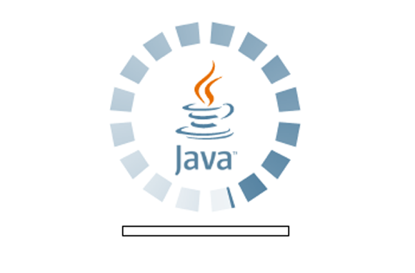
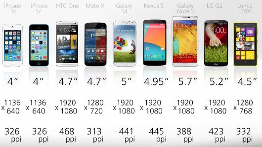
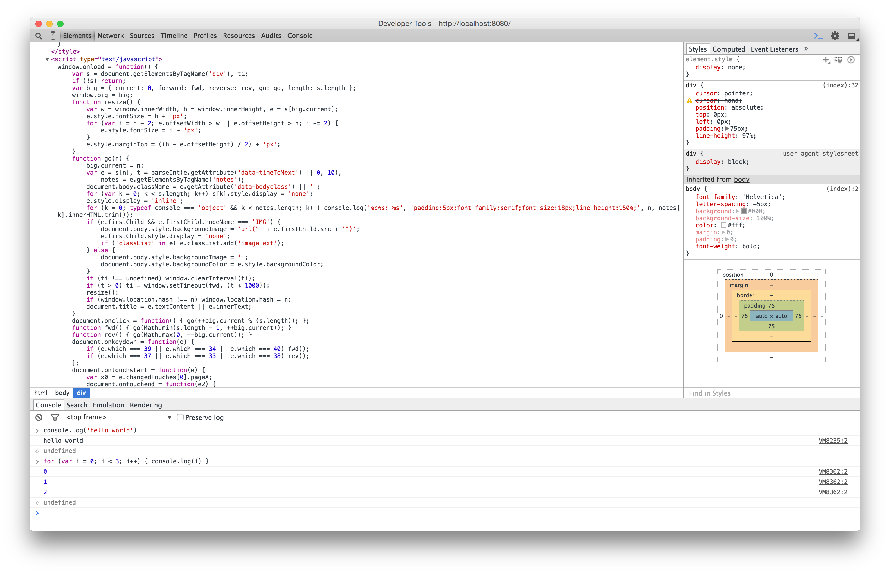
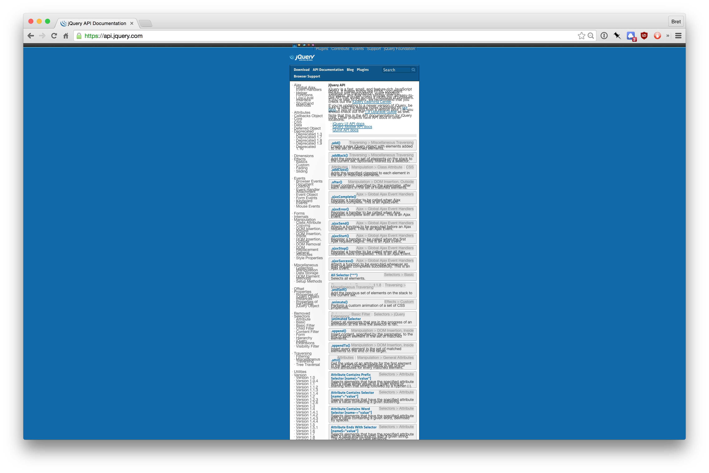
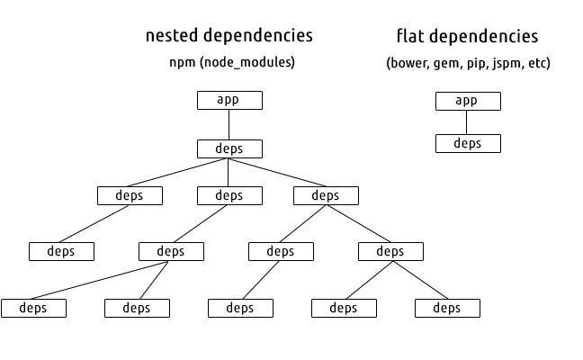

use ↔ to navigate
javascript
small modules
and the node aesthetic
~
what distinguishes JS?
1. Ubiquity
2. Unique Module System
...
3. Small Modules
1. Ubiquity
JS is everywhere
JS is the language of the web
JS is actually portable

JS runs on browsers
in computers
smart phones
(all of them)
Cars
Cars
embedded devices
its the one programming language your entire extended family has installed on their computer
including multiple IDEs
Worse is Better
(vs "the right thing")
JS isn't the best language
but its simple, flexible and available
JS is fit for survival... and thats a good thing!
What is a module?
A module is a unit of code that is packaged for reuse by other modules
What is a module system?
A module system = conventions and programs that facilitate module use
JS didn't use to have a module system
when node.js came out...
JS got a package manager and a module loading system:
npm did two things
rapid module authorship
nested, local module dependencies
most programming languages have flat, global module dependencies
javascript + npm has nested, local dependencies
No more "DLL Hell"
Your app gets the modules it needs at the version it wants
updating your deps is no longer a threat to other project deps
all dependencies are installed locally to the project folder...
...instead of a global dependency folder shared by all projects
this decouples your project deps from all the other projects on your computer
nested dependencies reduce the cost of using modules
and writing and publishing them is quick and easy
$ npm init ; $ npm publish
reading and making changes is just as easy
$ git clone dep ; $ npm install ; $ npm test ; $ npm start
so lets use lots of them...
3. Small Modles
JS doesn't have a standard library
pre-internet tradition was "do-everything" modules
this tradition carried over to javascript
Libraries like jQuery...

...were the norm.
...this kitchen-sink mentality toward including a bunch of thematically-related but separable functionality into a single package...
...appears to be an artifact for the difficulty of publishing and discovery in a pre-github, pre-npm era.
-
James HolidayThis has several problems
· couples independent functionality to a single version number
·
...updating dependencies becomes a stressful ordeal
· large modules requires more knowledge and time when making contributions
· useful and reusable code get burred and left undocumented and unexposed
our modules are designed in isolation, documented in isolation and can be used in isolation.
-
Jake VerbatenSmall modules set you free
They can compose together to make up